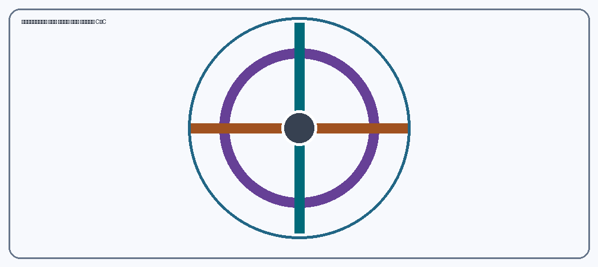

Αιθίνιο (HC≡CH): τρισδιάστατη δομή και δεσμοί
Μοντέλο και όψεις
Με εστίαση στο μοντέλο: βελάκια για περιστροφή, + και − για ζουμ. Μπορείτε επίσης να σύρετε το μοντέλο με ποντίκι ή αφή.
Σημασιολογικός χάρτης – τμήματα
Επιλέξτε το πλαίσιο για εμφάνιση ή απόκρυψη. Με «Επισήμανση» απομονώνεται το επιλεγμένο τμήμα και περιγράφεται η λειτουργία του.
Μετωπική επικάλυψη τροχιακών κατά τον άξονα των πυρήνων. Στο αιθίνιο υπάρχουν ένας δεσμός σ C–C και δύο δεσμοί σ C–H.
Κάθε άτομο άνθρακα διαθέτει δύο υβριδικά τροχιακά sp με γραμμική διάταξη 180°. Τα δύο μη υβριδισμένα p τροχιακά του είναι κάθετα μεταξύ τους.
Οι δύο δεσμοί π προκύπτουν από πλευρική επικάλυψη των μη υβριδισμένων p τροχιακών. Οι δύο αμοιβαία κάθετες κατανομές τους περιβάλλουν τον άξονα C–C.
Το πρώτο επίπεδο αναφοράς δείχνει τον έναν προσανατολισμό πλευρικής επικάλυψης των p τροχιακών. Το επίπεδο έχει διακριτές διαγραμμίσεις και έντονο περίγραμμα.
Το δεύτερο επίπεδο αναφοράς είναι κάθετο στο πρώτο. Διακρίνεται επιπλέον από αντίθετη διαγράμμιση και διαφορετικό περίγραμμα.
Δύο άτομα υδρογόνου βρίσκονται στα δύο άκρα του γραμμικού μορίου H–C≡C–H.
Βοηθητικοί άξονες, δείκτες και γράμματα επιτρέπουν τη χωρική ερμηνεία. Δεν αποτελούν επιπλέον χημικούς δεσμούς.
Στατικές σχηματικές όψεις (λειτουργούν χωρίς JavaScript)



Πώς σχηματίζονται οι δεσμοί;
Στο αιθίνιο, κάθε C έχει υβριδισμό sp. Το ένα sp τροχιακό του κάθε C επικαλύπτεται με sp τροχιακό του άλλου C και σχηματίζει δεσμό σ C–C, ενώ το δεύτερο επικαλύπτεται με το 1s του H και σχηματίζει δεσμό σ C–H. Τα δύο μη υβριδισμένα τροχιακά p του κάθε άνθρακα επικαλύπτονται πλευρικά με τα αντίστοιχα του άλλου άνθρακα: προκύπτουν δύο δεσμοί π σε κάθετες μεταξύ τους διευθύνσεις.
Προσβασιμότητα: Τα δύο επίπεδα έχουν αντίθετη διαγράμμιση και έντονο περίγραμμα, όχι μόνο διαφορετικό χρώμα. Οι οδηγίες λειτουργούν και με πληκτρολόγιο, ενώ κάθε αλλαγή ανακοινώνεται στο πεδίο κατάστασης. Ο υπολογισμός αντιθέσεων περιλαμβάνεται στο αρχείο contrast-ratios.json.